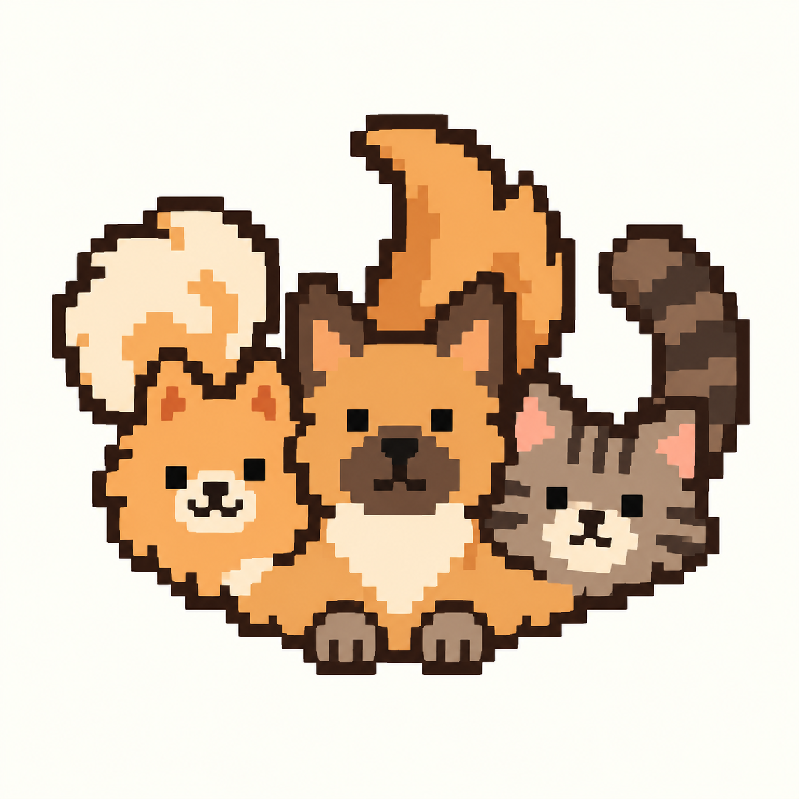

Click
0.09sA quick, simple tap candidate.

Six button sounds. Two voice options for each head.
Buttons first, then Pom, larger dog, and cat. A short pause separates each clip.
Short tactile taps and tonal accents.
A quick, simple tap candidate.
A very short mechanical tap candidate.
A short tonal alternative to a click.
A slightly longer pluck alternative.
A compact drop/pop candidate.
A longer accent for an explicit submit.
Two small-dog bark candidates.
Small-dog voice candidate; pitch-treated by the source creator.
A very short Shih Tzu bark as an alternative small-dog voice.
Two single-bark candidates.
A clean single bark for the larger dog head.
A second brief dog recording for comparison.
Two meow candidates.
A full meow; compare its length against the shorter alternative.
An alternative short meow for the tabby head.